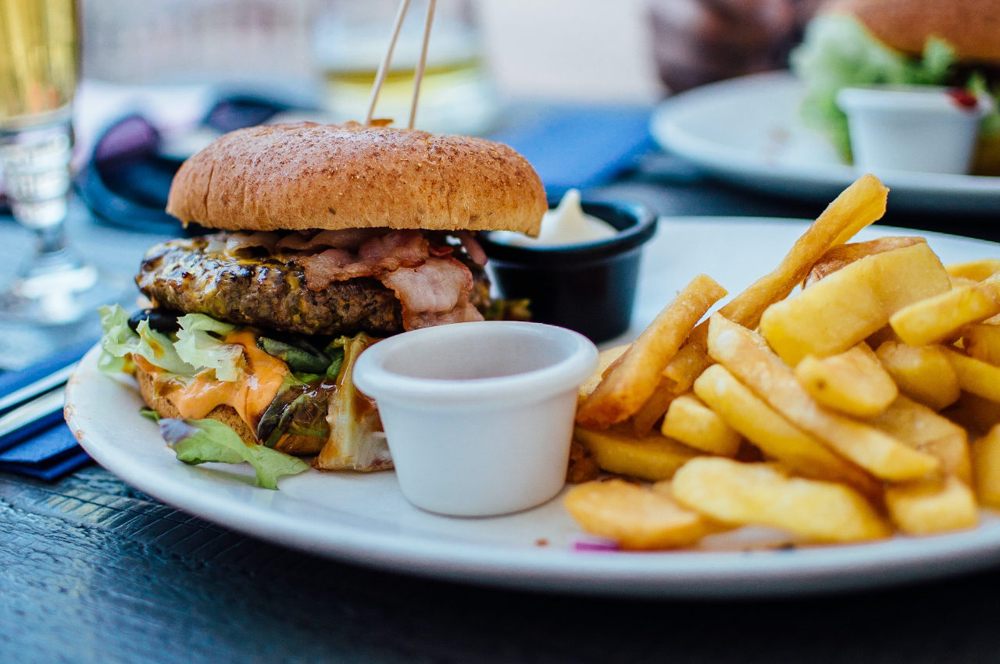

Hoe je controle houdt over je dieet na een competitie
Na de competitie hebben atleten vaak cravings en een gebrek aan controle over hun voeding. Dit kan leiden tot het verliezen van hun harde werk om hun top fysiek te bereiken. In deze blogpost bespreken we hoe atleten kunnen omgaan met honger, trainingsroutine en het vinden van balans na een wedstrijd.

De periode na de competitie, iets waardoor de atleet erg lang naar uitgekeken wordt. Met enorme cravings en gedachten naar alle soorten voeding die gegeten kan worden is het makkelijk om de controle te verliezen en ontelbare calorieën te gaan eten. Iets wat wij als sporters op hoog niveau natuurlijk niet willen. Na al dat harde werk om naar jouw top fysiek te geraken zou het zonde zijn om dit in een week tijd allemaal te verliezen. Hieronder overloop ik de zaken waar je tegen aan gaat lopen, hoe je gaat voelen, en hoe je ermee om kan gaan. Om zo de katapulteren vanuit je op perfectie fysiek naar de volgende fase om verder te bouwen.
Honger
De hormonen leptine en ghreline zullen na je wedstrijd totaal uit balans zijn En dat ook een tijd blijven. Er is zeker niks mis om naar uw wedstrijd Samen met familie en vrienden en heerlijke overgrote maaltijd te gaan eten waar je lang naar uit hebt gekeken. Daar moet het natuurlijk wel gedeeltelijk mee ophouden. De feedback die je normaal van leptine krijgt je verzadigingshormoon is niet aanwezig, omdat je vetpercentage heel laag is. Je kan dus ook niet op gevoel gaan eten want je gaat eindeloos jezelf volproppen tot je maag fysiek pijn gaat doen. Na je wedstrijd wil je dan ook een plan volgen waar je meer calorieën gaat eten nog steeds voeding die hoog in volume is niet hoog in calorieën. Dingen zoals fruit, groente, volwaardige eiwitbronnen, gezonde vetten en onbewerkte koolhydraten. Als er ruimte is om bepaalde lekkernijen toe te voegen kan dit zeker, we willen ook rustig aan de restricties van prep laten wegvallen maar dit moet op een juiste manier gebeuren zodat cravings en binges niet overnemen. In de praktijk zien we dat het gevoel van verzadiging tussen de twee tot 8 weken duurt vooraleer het terug is.
Training
Naar de wedstrijd toe is je totale herstelcapaciteit omlaag gegaan. Je zal dus ook vanuit dat laag volume terug starten. Naarmate dat koolhydraten terug toegevoegd worden In het dieet ga je meer energie hebben dit betekent niet dat je rechtstreeks terug naar je oude trainingsvolume kan. Met de nieuwe doelen in zicht na een wedstrijd, ga je afhankelijk van jouw feedback zoals je herstel je vermoeidheid en de spierpijn die je ervaart, rustig jouw trainingsvolume terug verhogen. Dit gebeurt over een periode van enkele maanden. De progressie die in deze periode gaat maken gaat aanzienlijk zijn, Omdat je lichaam opeens toegang heeft tot enorm veel energie wat het voor maanden niet gehad heeft. Trainingen zullen iets korter zijn maar progressie supergroot. Geniet dus van deze periode waar je met het minimale werk het maximale kan halen. En ga vooral niet overboord je voelt je Misschien goed maar je kan heel snel in een status van overtraining bevinden.
Balans
Je komt uit een periode waar je waarschijnlijk 4 maanden tot een half jaar extreme restricties op jezelf gelegd hebt. Deze restricties willen we rustig gaan weghalen. Iets wat enorm belangrijk is maar vaak vergeten wordt is terug de connecties met mensen rondom je heen leggen. Iets wat jezelf Misschien niet doorhad is de afstand die je van Mensen neemt in prep. Daarom terug samen weggaan leuke dingen doen en niet zoveel kijken naar tijden en maaltijden die gegeten kunnen worden. Maar verder gewoon genieten van het gezelschap en al het leuke dat daarbij komt kijken
Wil je dit toepassen op jouw situatie?
In een intakegesprek bekijken we je doel en wat daar voor jou voor nodig is.